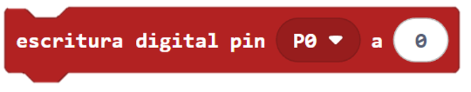
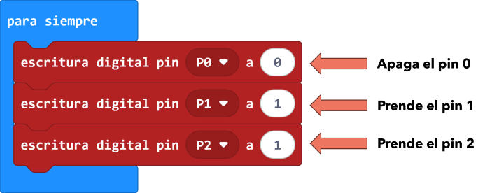
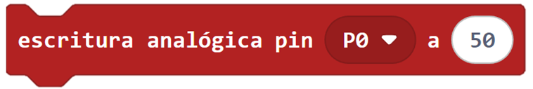
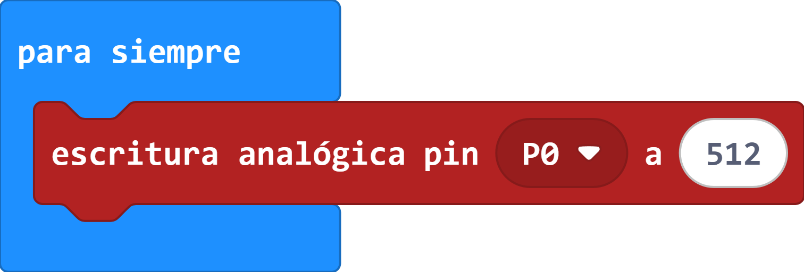
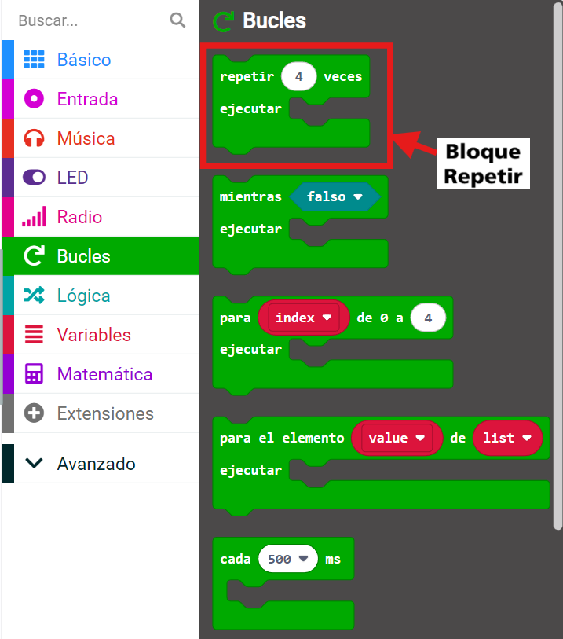

Teoría
Leer valores de un sensor
El siguiente bloque permite leer los valores de un sensor conectado a un pin del microbit. La imagen del bloques es el siguiente:

En la siguiente imagen se muestra un ejemplo de uso en dónde se lee el valor del pin 0 y se guarda en la variable Número 1 y, también, se lee el valor del pin 1 y se guarda en la variable Número 2.

Escribir valor digital en actuadores
El siguiente bloque permite encender (5V) o apagar (0V) un actuador (por ejemplo: motor, led, etc) conectado al pin. La imagen del bloque es el siguiente:

En la siguiente imagen se muestra un ejemplo de uso en dónde se apaga el pin 0, se prende o enciende el pin 1 y se prende el pin 2.

Escribir valores analógicos en actuadores
El siguiente bloque escribe un valor analógico (del 0 al 1023) en el pin que se le indique.

En la siguiente imagen se muestra un ejemplo de escribir el valor de 512 al pin 0 del microbit, es decir, si un LED esta conectado al pin 0 del microbit entonces éste se encenderá a la mitad de la intensidad que entregue el Microbit.

Bloque Repetir
El bloque Repetir nos permite repetir las veces que sea necesario los bloques de programación que se encuentren dentro de ella. Este bloque lo encontramos en el grupo de bloques que se llama "Bucles" que son de color verde dentro del programa Makecode.
